2.4 Implicit differentiation 隐式微分
1.隐式函数的引入
1.如何求隐式函数
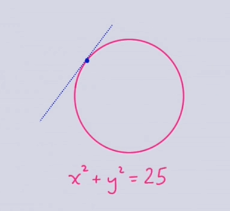
2.目标:
识别隐式函数
使用链式法则来求导隐式函数
理解为什么幂法则对分数也是有效的.
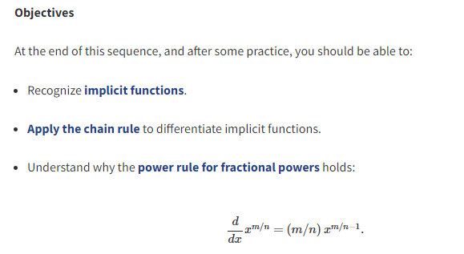
2.隐式函数求导
圆无法通过垂线检测,每个x都有两个y值,但是我们任然能够求解y得到两个方程组,一个用来描述上半圆,一个用来描述下半圆
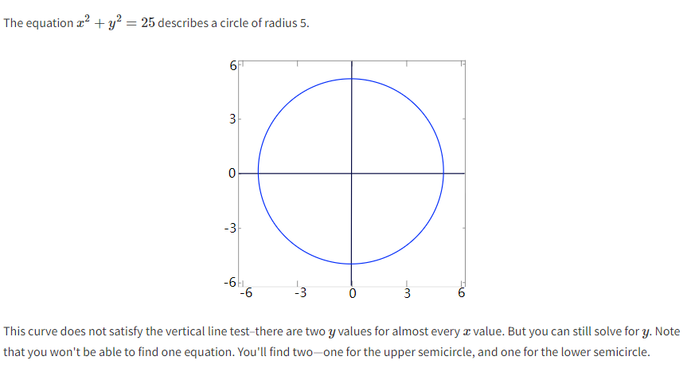
对隐式函数求导,利用链式法则
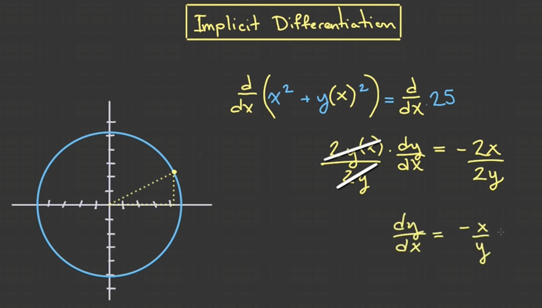
圆的导数的特性,求任意点的斜率
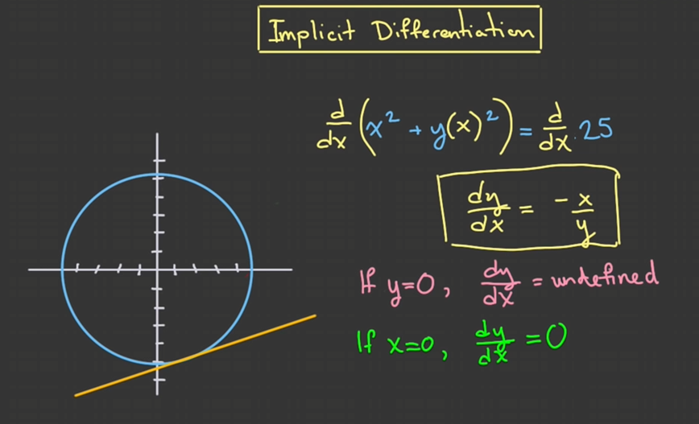
证明了幂法则也适用于分数,我们假设了n≠0,n≠1
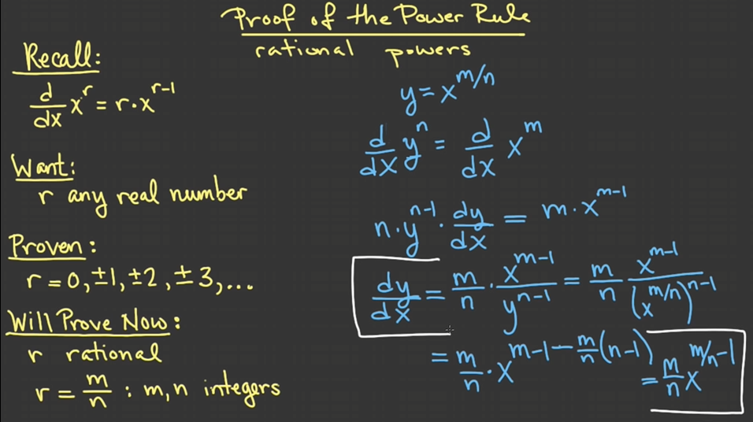
我们把可以直接写出表达式的叫做显示表示,把需要计算不能直接写出表达式的叫做隐式表示.
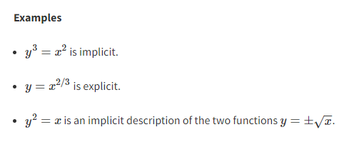
3.隐式函数使用
求某个点的切线,在什么时候切线水平?
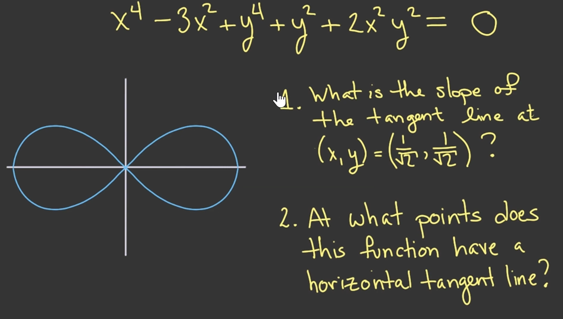
注意:因为我们是对x求导,如果要对y求导,那根据链式法则,就需要先对外面求导,再对里面求导.
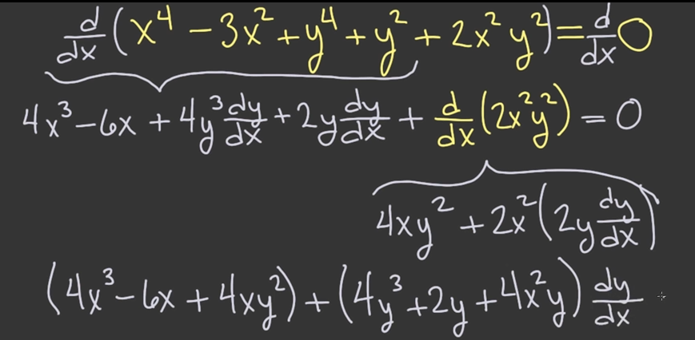
求解出了第一个问题
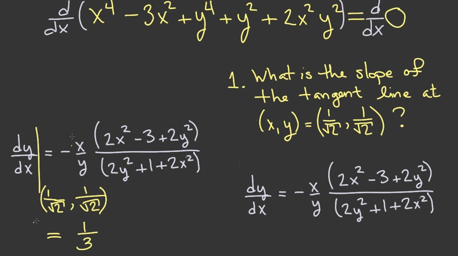
第二个问题,因为x=0的时候y=0,所以就只能是右边的式子=0了.然后写成了x²的表达式,代入了我们的隐式函数,然后求出了y的值,然后求出了x的值
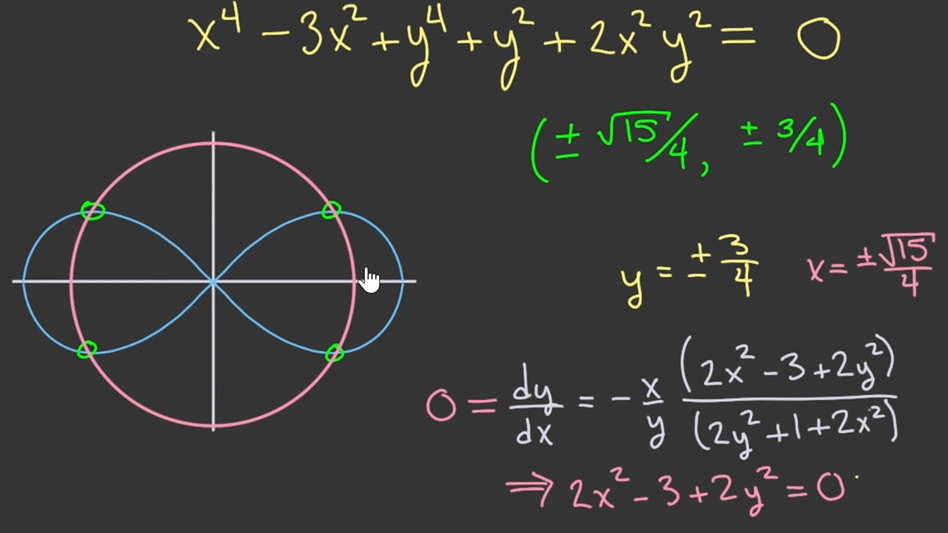